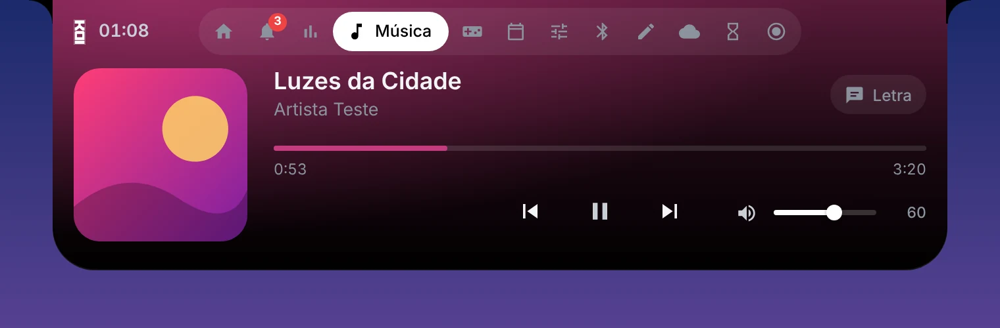
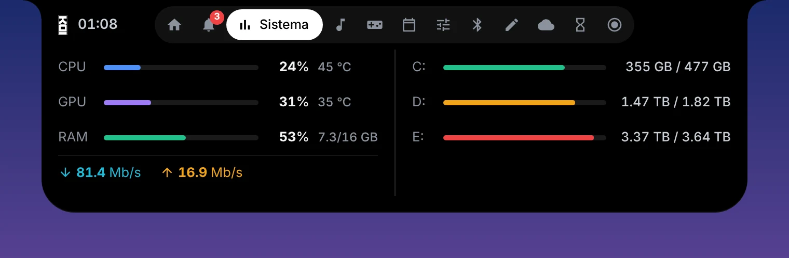
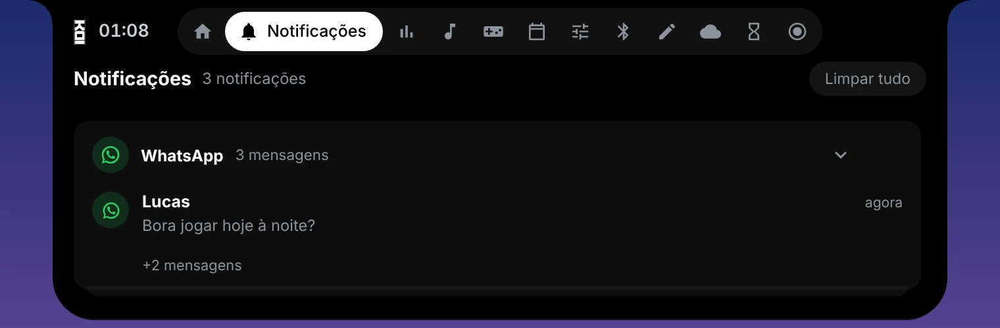
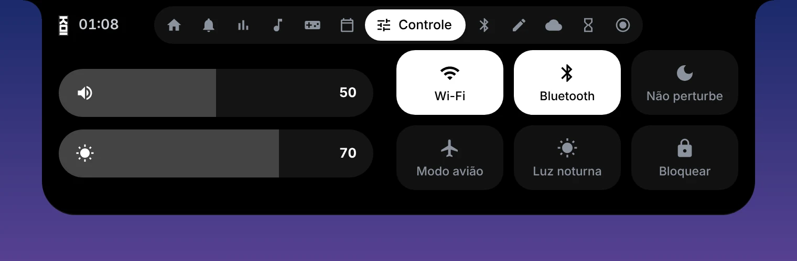

O topo da sua tela agora faz tudo.
Uma ilha dinâmica para o Windows: música, sistema, FPS, WhatsApp, clima e atalhos aparecem no topo da tela e somem quando você não precisa.
Grátis · Windows 10 e 11 (64 bits) · 72 MB




Recursos
Tudo a um passar de mouse.
Passe o mouse no topo da tela e a ilha abre. Tire, e ela volta a ser só uma pílula discreta.
Música em qualquer lugar
Capa, controles e o volume do próprio app (Spotify e outros), com a cor do álbum pintando a ilha.
Sistema ao vivo
Uso e temperatura de CPU e GPU, RAM, rede e discos, com barras suaves que respondem na hora.
FPS real dos jogos
Contador de FPS com 1% low, medido como os overlays profissionais, e aviso quando o FPS despenca.
WhatsApp na ilha
Mensagens com foto de quem mandou e figurinhas. Um clique abre o WhatsApp, sem abrir a ilha.
Home com widgets
Aumente, diminua e arraste os quadros como no Android. Música e clima ganham mais detalhes quando crescem.
Clima animado
Sol, chuva, neve e tempestade animados no quadro, com máxima, mínima e as próximas horas.
Controle rápido
Volume, brilho, Wi-Fi, Bluetooth, não perturbe, luz noturna, modo avião e bloquear a tela.
Gravação de tela
Grave até 1440p a 60 fps, com o som do PC e o microfone, direto da ilha.
Calendário e notas
Compromissos, feriados do Brasil e notas rápidas, sempre a um passar de mouse.
Marca discreta
Prefere a tela limpa? A ilha vira um traço fino e deixa só os números, na cor que você escolher.
Avisos que importam
Temperatura alta, carregador conectado e até uma lembrança para beber água.
Do seu jeito
Tema, transparência, cor de destaque, sons e quais abas aparecem. Some sozinha em tela cheia.
Por dentro
Uma aba para cada coisa.
Abra a ilha e passe pelas abas. Escolha nas configurações quais delas aparecem.
Novo na 1.3
Sua Home, do seu tamanho.
Segure um quadro e ele entra em edição, como os widgets do celular.
- Puxe pelos lados para deixar o quadro largo, alto ou ocupando a Home inteira.
- Arraste para trocar os quadros de lugar, com animação.
- Quadros grandes mostram mais: capa e controles da música, previsão das próximas horas.
- O clima anima conforme o tempo lá fora: sol, chuva, neve, tempestade.
Leveza
Feita para não atrapalhar o jogo.
As leituras do sistema rodam num auxiliar nativo e as animações vão para a placa de vídeo. O processador fica livre para o que importa.
1,2% tocando música
somando todos os processos
com os picos 3× menores
Medido num Intel Core i7-9700KF com RTX 5070, Windows 11, pelo registro de desempenho da própria ilha. Em tela cheia, a ilha se esconde.
Novidades
O que mudou.
Baixe a KOI Island.
Versão 1.3.0 (Beta) · 7 de novembro de 2026 · Windows 10 e 11 (64 bits)
Perguntas
Dúvidas comuns.
Quanto custa?
Nada. A KOI Island é grátis, sem anúncios e sem conta.
O Windows mostrou um aviso azul ao abrir o instalador. É seguro?
É o SmartScreen, que aparece para programas novos sem assinatura digital paga. Clique em Mais informações e depois em Executar assim mesmo. Se quiser conferir o arquivo, compare o código SHA-256 mostrado acima com o do arquivo baixado.
Por que ela pede para rodar como administrador?
Só o contador de FPS e a temperatura do processador precisam disso, porque leem informações protegidas do Windows. Sem administrador, todo o resto funciona normalmente.
Atrapalha o desempenho nos jogos?
Não deve. Ela usa menos de 1% do processador, se esconde quando um jogo ou vídeo está em tela cheia e só liga o contador de FPS quando você está jogando.
Meus dados saem do computador?
Não. Tudo é lido e fica no seu PC, inclusive as mensagens do WhatsApp. A ilha só busca na internet a previsão do tempo, os feriados e capas e letras de músicas.
Instalador ou portátil?
O instalador cria atalho, abre junto com o Windows e é o melhor para o dia a dia. O portátil roda de qualquer pasta, sem instalar, bom para testar.
Como atualizo para uma versão nova?
Baixe o instalador novo nesta página e abra. Ele instala por cima e suas configurações, notas e tamanhos dos quadros continuam iguais.
Funciona com dois monitores?
Sim. A ilha fica no monitor principal do Windows.